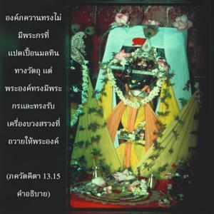
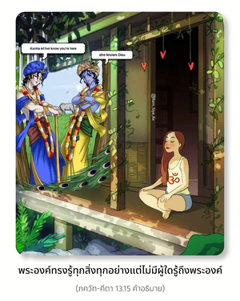

องค์อภิวิญญาณทรงเป็นแหล่งกำเนิดเดิมของประสาทสัมผัสทั้งหมด ถึงกระนั้นพระองค์ทรงไม่มีประสาทสัมผัส ถึงแม้ว่าทรงเป็นผู้ค้ำจุนมวลชีวิตพระองค์ก็ทรงไม่ยึดติด ทรงเป็นทิพย์อยู่เหนือระดับธรรมชาติ และในขณะเดียวกันทรงเป็นเจ้านายของระดับแห่งธรรมชาติวัตถุทั้งหมด


องค์ภควานฺแม้จะทรงเป็นแหล่งกำเนิดของประสาทสัมผัสทั้งหมดของสิ่งมีชีวิตพระองค์ทรงไม่มีประสาทสัมผัสวัตถุเหมือนพวกเรา อันที่จริงปัจเจกวิญญาณมีประสาทสัมผัสทิพย์แต่ในพันธชีวิตพวกเราถูกปกคลุมด้วยธาตุวัตถุต่างๆ ดังนั้นกิจกรรมของประสาทสัมผัสแสดงออกผ่านทางวัตถุ ประสาทสัมผัสขององค์ภควานฺไม่ถูกปกคลุม ประสาทสัมผัสของพระองค์ทรงเป็นทิพย์ฉะนั้นจึงเรียกว่า นิรฺคุณ คุณ หมายความว่าระดับวัตถุ แต่ประสาทสัมผัสของพระองค์ทรงไม่ถูกวัตถุปกคลุม ควรเข้าใจว่าประสาทสัมผัสของพระองค์ไม่เหมือนกับของพวกเรา ถึงแม้ว่าพระองค์ทรงเป็นแหล่งกำเนิดแห่งกิจกรรมทางประสาทสัมผัสของพวกเราทั้งหมด พระองค์ทรงมีประสาทสัมผัสทิพย์ซึ่งไม่มีวันเป็นมลทิน เรื่องนี้ได้อธิบายไว้อย่างสวยงามใน เศฺวตาศฺวตร อุปนิษทฺ (3.19) โศลก อปาณิ-ปาโท ชวโน คฺรหีตา องค์ภควานฺทรงไม่มีพระกรที่แปดเปื้อนมลทินทางวัตถุแต่พระองค์ทรงมีพระกร และทรงรับเครื่องบวงสรวงที่ถวายให้พระองค์ นั่นคือข้อแตกต่างระหว่างพันธวิญญาณและอภิวิญญาณ พระองค์ทรงไม่มีพระเนตรวัตถุแต่ทรงมีพระเนตรทิพย์ไม่เช่นนั้นจะทรงเห็นได้อย่างไร พระองค์ทรงเห็นทุกสิ่งทุกอย่างในอดีต ปัจจุบัน และอนาคต พระองค์ประทับอยู่ภายในหัวใจของมวลชีวิตและทรงทราบว่าเราได้ทำอะไรไว้ในอดีต เรากำลังทำอะไรอยู่ในปัจจุบัน และอะไรที่รอคอยเราอยู่ในอนาคต ได้ยืนยันไว้ใน ภควัท-คีตา เช่นกันว่า พระองค์ทรงรู้ทุกสิ่งทุกอย่างแต่ไม่มีผู้ใดรู้ถึงพระองค์ กล่าวไว้ว่าองค์ภควานฺทรงไม่มีพระเพลาเหมือนพวกเรา แต่พระองค์ทรงสามารถเดินทางไปในอวกาศเพราะว่าทรงมีพระเพลาทิพย์ อีกนัยหนึ่งมิใช่ว่าจะไม่มีรูปลักษณ์ พระองค์ทรงมีพระเนตร พระเพลา พระกร และทุกสิ่งทุกอย่าง เนื่องจากเราเป็นละอองอณูขององค์ภควานฺเราก็มีสิ่งเหล่านี้เช่นกัน แต่พระกรพระเพลา พระเนตร และประสาทสัมผัสของพระองค์ทรงไม่เปื้อนมลทินจากธรรมชาติวัตถุ
ภควัท-คีตา ยืนยันไว้เช่นกันว่าเมื่อทรงปรากฏ พระองค์ทรงปรากฏในรูปลักษณ์เดิมด้วยพลังงานเบื้องสูงของพระองค์โดยไม่แปดเปื้อนมลทินจากพลังงานทางวัตถุเนื่องจากทรงเป็นพระผู้เป็นเจ้าของพลังงานวัตถุ ในวรรณกรรมพระเวทเราพบว่าทั่วทั้งพระวรกายของพระองค์ทรงเป็นทิพย์ ทรงมีรูปลักษณ์อมตะเรียกว่า สจฺ-จิทฺ-อานนฺท-วิคฺรห พระองค์ทรงเปี่ยมไปด้วยความมั่งคั่งทั้งหลาย พระองค์ทรงเป็นเจ้าของความร่ำรวยทั้งหมดและทรงเป็นเจ้าของพลังงานทั้งหมด ทรงเป็นผู้มีปัญญาสูงสุดและเปี่ยมไปด้วยความรู้ สิ่งเหล่านี้คือลักษณะบางประการขององค์ภควานฺ พระองค์ทรงเป็นผู้ค้ำจุนมวลชีวิตและทรงเป็นพยานของกิจกรรมทั้งหลาย เท่าที่เราสามารถเข้าใจจากวรรณกรรมพระเวทว่าองค์ภควานฺทรงเป็นทิพย์เสมอ ถึงแม้ว่าเราไม่เห็นพระเศียร พระพักตร์ พระกร หรือพระเพลาของพระองค์ พระองค์ก็ทรงมีสิ่งเหล่านี้ และเมื่อเราพัฒนาไปถึงสภาวะทิพย์เราก็จะสามารถเห็นรูปลักษณ์ขององค์ภควานฺ เนื่องจากประสาทสัมผัสแปดเปื้อนไปด้วยมลทินทางวัตถุเราจึงไม่สามารถเห็นรูปลักษณ์ของพระองค์ ดังนั้นพวกไม่เชื่อในรูปลักษณ์ที่ยังมีเชื้อโรคทางวัตถุอยู่จะไม่สามารถเข้าใจองค์ภควานฺได้